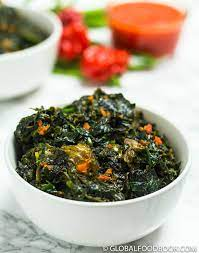

Egusi Soup

Description
This is one of the most delicious Nigerian dishes you'd ever come across
Ingredients
- Tomatoes and bell peppers - blended
- Palm oil
- Vegetables - Spinach, Ugu (Fluted pumpkin leaves), or bitter leaves
- Protein - beef, goat meat, chicken, or whatever meat you prefer
- Fish - smoked fish, stockfish, dried fish
- Crayfish - ground
- Stock cubes - for seasoning
- Scotch bonnet (ata rodo) - blended
- Onions - chopped
- Salt - to taste
- Optional - Locust beans, shaki and cow leg, and prawns (fresh or dried)
Short Steps
- Boil meat and fish with seasoning cubes and salt.
- Blend tomatoes, peppers, and onions.
- Fry the blend in palm oil with locust beans (iru).
- Add meat, fish, crayfish, and seasoning.
- Add vegetables (spinach/ugu) and cook for 5 minutes.
- Season and adjust salt. Serve hot.